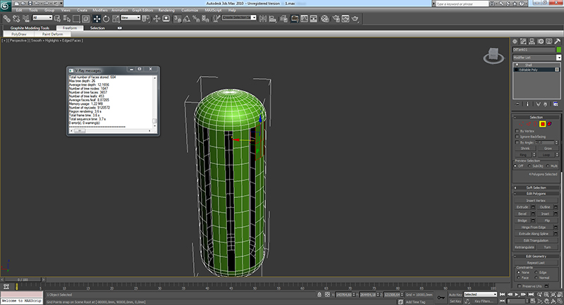

3D scanning and printing
Week 5
3D scanning and printing
Tasks
Group assignment:
group project: test the design rules for your printer(s)
design and 3D print an object (small, few cm) that could not be made subtractively
3D scan an object (and optionally print it) (extra credit: make your own scanner)
Group assignment. printing test
For our group assignment we decided to model a print test for each of our 3d printers at the lab, a prusa i3, a BQ witbox, a zmorph and a Stratasys Fortus 250mc. I started to model the test in Illustrator and then exported to Japanese AI, that’s the format 3d Studio Max recognizes, and in Studio MAX imported the file, following these steps:
Menu-->Import-->Select AI file, select desired option
Menu-->Import-->Select AI file, select desired option
Imported vector file in spline mode
I converted the splines to editable poly and started making extrusions and aligning the polygons. This is the final result and the scheme for printing
Scheme of the model, a render edited in photoshop by adding some text

Tomorrow i'll print the model in my selected 3printer and share with you.
Vector file
3d MAX file
STL file
References - Calibration Models in thingiverse,
3D printing
After searching something to do, i've came to a conclusion that there are a few models that i would like to test. I decided to model 3 pieces with diferent technics:
FILES
A Chamfer box jail
For this purpose i want to print something that is opened, so i can see inside, and put an object inside it.
In 3d Studio Max, i selected extended primitives-->oiltank with this parameters:
Parameters of the oiltank
Converting to editable poly
Editing and deleting the polygons

Applying a 1mm shell modifier
The idea is to 3d print, pause the printing and insert a coin inside the model and finish the model. I'll share the result later.
A Chamfer box with 3d print inside
For this model i wanted to print 2 objects, a box with a hedra inside with support structurethat i could cut at the end.
Parameters of the chamferbox (extended primitives-->chamferbox)
Adding support structure, a simple box scaling the top to be thinner than the base. I selected the vertex, the scale tool and reduced the top
Creating a Hedra-dodec to put in the top of the support structure
Aligning all the objects and attaching them all, to form one single object and export to STL.
I'll share the result later.
Chamferbox with an interior slide
This object is impossible to make subtratively. i started to draw a gengon (extended primitives-->gengon). Gengon parameters
spline modelling. Ensure to transform it in editable poly in the end.
Pro boolean operation. Just select the other object and let 3d max do the rest.
Final result
Slicing the 3d Model with CURA.
The final result didn't work so well at the top, so next time i'll change the parameters of the infill, or the top thickness or the infill %.
Result of the 3D Print.
3D Studio MAX files
STL Files
Cura Printing Profile
3D Scanning
For this assignment i used the Ciclop Scanner. It works with two laser and one webcam. For first thing I calibrated the scanner and prepared the set, with three lights, for to make soft shadows and to make correct lighting. Also I was careful to don’t focus light directly on the object, but I did reflect light on the table or I made a soft light with a white paper placed in front of the light.
I set the scanning process to max resolution, that lasted about 15 minutes.
One issue of this 3d Scanner is that it doesn't create mesh files, instead it creates points cloud. So i had to create it for 3d printing with Mesh Labs software. I followed this great tutorial to help me do it. I'll post photos later